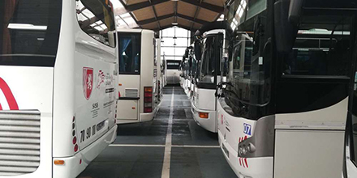

Le fait du jour
Ramassage scolaire : « Ça devrait aller »
Cars - Le côté très progressif de la rentrée, par demi-groupes, facilite la réorganisation
Chaque jour, en temps normal, environ 200000 élèves prennent, en Nouvelle-Aquitaine, le car, pour aller à l'école, au collège ou au lycée.Parmi eux, une énorme majorité de collégiens (85000) et de lycéens (75000).Quelque 80sociétés de transports y travaillent, dont par exemple la Citram enGironde.Des structures de grande envergure, d'autres toutes petites.Et c'est la Région qui pilote : l'organisation du transport scolaire est depuis quelques années une compétence régionale.
À partir du 11mai, dans ces cars, le port du masque sera obligatoire pour les chauffeurs et les collégiens, pas pour les écoliers, et seul un siège sur deux pourra être occupé. Comment, en quelques jours, adapter à ces règles drastiques toute cette chaîne qui se met en mouvement chaque matin et chaque après-midi un peu partout dans la région?? La question paraît ardue, mais Renaud Lagrave, vice-président de la Nouvelle-Aquitaine chargé des mobilités, l'aborde sans excès de stress. « Cela devrait bien se passer, car nous nous préparons avec les transporteurs depuis plusieurs semaines. »